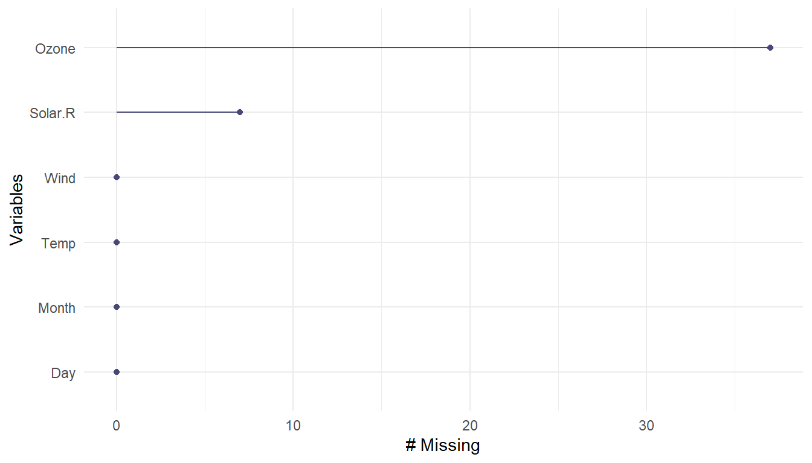
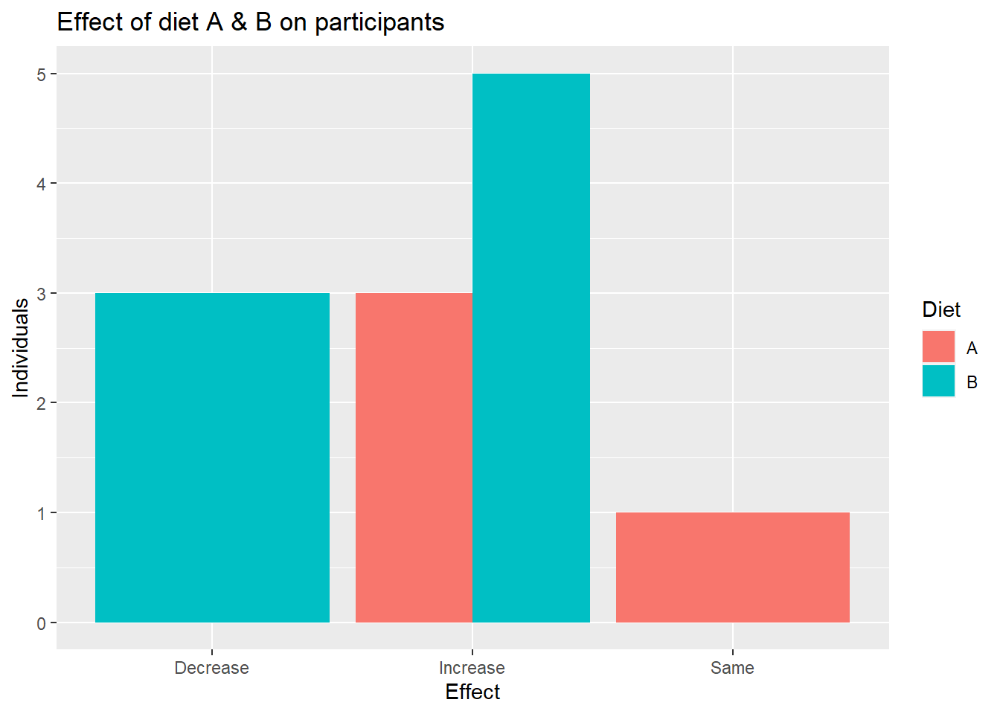

Warning: package 'ggplot2' was built under R version 4.2.2Data Cleaning
Recap on summarization
summary(x): quantile informationsummarize: creates a summary table of columns of interest- combine with
across()to programmatically select columns
- combine with
count(variable): how many of each unique value do you havegroup_by(): changes all subsequent functions- combine with
summarize()to get statistics per group
- combine with
plot()andhist()are great for a quick snapshot of the data
Recap on data classes
- tibbles show column classes!
as.CLASS_NAME(x)can be used to change the class of an object x- Logic class objects only have
TRUEorFalse(without quotes) - The repeat
rep()andseq()functions help you create vectors withtoandfromarguments (and others) sample()makes random vectors. Can be used for integers or double depending on what it is sampling from.- matrix has columns and rows but is all one data class
- lists can contain multiples of any other class of data including lists!
- The
lubridatepackage is helpful for dates and times
📃Cheatsheet
Data Cleaning
In general, data cleaning is a process of investigating your data for inaccuracies, or recoding it in a way that makes it more manageable.
⚠️ MOST IMPORTANT RULE - LOOK 👀 AT YOUR DATA! ⚠️
Dealing with Missing Data
Missing data types
One of the most important aspects of data cleaning is missing values.
Types of “missing” data:
NA- general missing dataNaN- stands for “Not a Number”, happens when you do 0/0.Infand-Inf- Infinity, happens when you divide a positive number (or negative number) by 0.
Finding Missing data
is.na- looks forNANandNAis.nan- looks forNANis.infinite- looks for Inf or -Inf
test<-c(0,NA, -1)
test/0[1] NaN NA -Inftest <-test/0
is.na(test)[1] TRUE TRUE FALSEis.nan(test)[1] TRUE FALSE FALSEis.infinite(test)[1] FALSE FALSE TRUEUseful checking functions
anywill beTRUEif ANY are trueany(is.na(x))- do we have anyNA’s inx?
A = c(1, 2, 4, NA)
B = c(1, 2, 3, 4)
any(is.na(A)) # are there any NAs - YES/TRUE[1] TRUEany(is.na(B)) # are there any NAs- NO/FALSE[1] FALSEFining NA values with count()
Check the values for your variables, are they what you expect?
count() is a great option because it gives you:
- The unique values
- The amount of these values
Check if rare values make sense.
bike <-jhur::read_bike()
bike %>% count(subType)# A tibble: 4 × 2
subType n
<chr> <int>
1 STCLN 1
2 STRALY 3
3 STRPRD 1623
4 <NA> 4naniar
Sometimes you need to look at lots of data though… the naniar package is a good option.
The pct_complete() function shows the percentage that is complete for a given data object.
#install.packages("naniar")
library(naniar)Warning: package 'naniar' was built under R version 4.2.2x = c(0, NA, 2, 3, 4, -0.5, 0.2)
naniar::pct_complete(x)[1] 85.71429test[1] NaN NA -Infnaniar::pct_complete(test) # doesn't count infinite values as missing[1] 33.33333Air quality data
The airquality dataset comes with R about air quality in New York in 1973.
?airquality # use this to find out more about the data
airqual <-tibble(airquality)
airqual# A tibble: 153 × 6
Ozone Solar.R Wind Temp Month Day
<int> <int> <dbl> <int> <int> <int>
1 41 190 7.4 67 5 1
2 36 118 8 72 5 2
3 12 149 12.6 74 5 3
4 18 313 11.5 62 5 4
5 NA NA 14.3 56 5 5
6 28 NA 14.9 66 5 6
7 23 299 8.6 65 5 7
8 19 99 13.8 59 5 8
9 8 19 20.1 61 5 9
10 NA 194 8.6 69 5 10
# … with 143 more rowsnaniar: pct_complete()
pct_complete(airquality)[1] 95.20697naniar plots
The gg_miss_var() function creates a nice plot about the number of missing values for each variable.
naniar::gg_miss_var(airqual)
Missing Data Issues
Recall that mathematical operations with NA often result in NAs.
sum(c(1,2,3,NA))[1] NAmean(c(2,4,NA))[1] NAmedian(c(1,2,3,NA))[1] NAMissing Data Issues
This is also true for logical data. Recall that TRUE is evaluated as 1 and FALSE is evaluated as 0.
x = c(TRUE, TRUE, TRUE, TRUE, FALSE, NA)
sum(x)[1] NAsum(x, na.rm = TRUE)[1] 4filter() and missing data
Be careful with missing data using subsetting:
filter() removes missing values by default. Because R can’t tell for sure if an NA value meets the condition. To keep them need to add is.na() conditional.
filter() and missing data
df# A tibble: 6 × 2
Dog Cat
<dbl> <dbl>
1 0 NA
2 NA 8
3 2 6
4 3 NA
5 1 2
6 1 NAdf %>% filter(Dog < 3)# A tibble: 4 × 2
Dog Cat
<dbl> <dbl>
1 0 NA
2 2 6
3 1 2
4 1 NAfilter() and missing data
df %>% filter(Dog < 3 | is.na(Dog))# A tibble: 5 × 2
Dog Cat
<dbl> <dbl>
1 0 NA
2 NA 8
3 2 6
4 1 2
5 1 NATo remove rows with NA values for a variable use drop_na()
A function from the tidyr package.
df %>% drop_na(Dog)# A tibble: 5 × 2
Dog Cat
<dbl> <dbl>
1 0 NA
2 2 6
3 3 NA
4 1 2
5 1 NATo remove rows with NA values for a data frame use drop_na()
This function of the tidyr package drops rows with any missing data in any column when used on a df.
df %>% drop_na()# A tibble: 2 × 2
Dog Cat
<dbl> <dbl>
1 2 6
2 1 2Drop columns with any missing values
Use the miss_var_which() function from naniar
df<-df %>% mutate(test =c(1,2,3,4,5,6))
df# A tibble: 6 × 3
Dog Cat test
<dbl> <dbl> <dbl>
1 0 NA 1
2 NA 8 2
3 2 6 3
4 3 NA 4
5 1 2 5
6 1 NA 6miss_var_which(df) # which columns have missing values[1] "Dog" "Cat"Drop columns with any missing values
df %>% select(!miss_var_which(df))# A tibble: 6 × 1
test
<dbl>
1 1
2 2
3 3
4 4
5 5
6 6Removing columns with threshold of percent missing row values
is.na(df) %>% head(n = 3) Dog Cat test
[1,] FALSE TRUE FALSE
[2,] TRUE FALSE FALSE
[3,] FALSE FALSE FALSEcolMeans(is.na(df))#TRUE and FALSE treated like 0 and 1 Dog Cat test
0.1666667 0.5000000 0.0000000 df %>% select(which(colMeans(is.na(df)) < 0.2))# remove if over 20% missing# A tibble: 6 × 2
Dog test
<dbl> <dbl>
1 0 1
2 NA 2
3 2 3
4 3 4
5 1 5
6 1 6Change a value to be NA
The na_if() function of dplyr can be helpful for this. Let’s say we think that all 0 values should be NA.
df %>% head(n = 3)# A tibble: 3 × 3
Dog Cat test
<dbl> <dbl> <dbl>
1 0 NA 1
2 NA 8 2
3 2 6 3df %>% mutate(Dog = na_if(Dog, 0))# A tibble: 6 × 3
Dog Cat test
<dbl> <dbl> <dbl>
1 NA NA 1
2 NA 8 2
3 2 6 3
4 3 NA 4
5 1 2 5
6 1 NA 6Think about NA
Sometimes removing NA values leads to distorted math - be careful! Think about what your NA means for your data (are you sure ?).
Is an NA for values so low they could not be reported? Or is it this and also if there was a different issue?
Think about NA
If it is something more like a zero then you might want it included in your data like a zero.
Example: - survey reports NA if student has never tried cigarettes - survey reports 0 if student has tried cigarettes but did not smoke that week
You might want to keep the NA values so that you know the original sample size.
Word of caution
Calculating percentages will give you a different result depending on your choice to include NA values.
red_blue# A tibble: 3 × 2
color col_count
<chr> <int>
1 blue 3
2 red 3
3 <NA> 3red_blue %>% mutate(percent =
col_count/sum(pull(red_blue, col_count)))# A tibble: 3 × 3
color col_count percent
<chr> <int> <dbl>
1 blue 3 0.333
2 red 3 0.333
3 <NA> 3 0.333Word of caution
red_blue %>% mutate(percent =
col_count/sum(pull(drop_na(red_blue), col_count)))# A tibble: 3 × 3
color col_count percent
<chr> <int> <dbl>
1 blue 3 0.5
2 red 3 0.5
3 <NA> 3 0.5Should you be dividing by 9 or 6?
It depends on your data and what NA might mean.
Pay attention to your data and your NA values!
Summary
is.na(),any(is.na()),count(), and functions fromnaniarlikegg_miss_var()can help determine if we haveNAvaluesfilter()automatically removesNAvalues - can’t confirm or deny if condition is met (need| is.na()to keep them)drop_na()can help you removeNAvalues from a variable or an entire data frameNAvalues can change your calculation results- think about what
NAvalues represent
Lab Part 1
🏠 Class Website
💻Lab
Recoding Variables
Example of Recoding
Say we have some data about samples in a diet study:
data_diet# A tibble: 12 × 4
Diet Gender Weight_start Weight_change
<chr> <chr> <int> <int>
1 A Male 161 18
2 B m 242 20
3 B Other 141 -10
4 A F 200 11
5 B Female 142 -9
6 B M 152 -4
7 A f 245 12
8 B O 117 7
9 B Man 120 2
10 A f 132 0
11 B F 197 4
12 B O 154 15Oh dear…
This needs lots of recoding.
data_diet %>%
count(Gender)# A tibble: 9 × 2
Gender n
<chr> <int>
1 f 2
2 F 2
3 Female 1
4 m 1
5 M 1
6 Male 1
7 Man 1
8 O 2
9 Other 1dplyr can help!
Using Excel to find all of the different ways gender has been coded, could be hectic!
In dplyr you can use the recode function (need mutate here too!):
# General Format - this is not code!
{data_input} %>%
mutate({variable_to_fix} = {Variable_fixing}, {old_value} = {new_value},
{another_old_value} = {new_value})data_diet %>%
mutate(Gender = recode(Gender, M = "Male",
m = "Male",
Man = "Male",
O = "Other",
f = "Female",
F = "Female")) %>%
count(Gender, Diet)recode()
data_diet %>%
mutate(Gender = recode(Gender, M = "Male",
m = "Male",
Man = "Male",
O = "Other",
f = "Female",
F = "Female")) %>%
count(Gender, Diet)# A tibble: 5 × 3
Gender Diet n
<chr> <chr> <int>
1 Female A 3
2 Female B 2
3 Male A 1
4 Male B 3
5 Other B 3Or you can use case_when()
The case_when() function of dplyr can help us to do this as well.
# General Format - this is not code!
{data_input} %>%
mutate({variable_to_fix} = case_when({Variable_fixing}
/some condition/ ~ {value_for_con})Note that automatically values not reassigned explicitly by case_when() will be NA unless otherwise specified.
data_diet %>%
mutate(Gender = case_when(Gender == "M" ~ "Male"))# A tibble: 12 × 4
Diet Gender Weight_start Weight_change
<chr> <chr> <int> <int>
1 A <NA> 161 18
2 B <NA> 242 20
3 B <NA> 141 -10
4 A <NA> 200 11
5 B <NA> 142 -9
6 B Male 152 -4
7 A <NA> 245 12
8 B <NA> 117 7
9 B <NA> 120 2
10 A <NA> 132 0
11 B <NA> 197 4
12 B <NA> 154 15Use of case_when() without automatic NA
# General Format - this is not code!
{data_input} %>%
mutate({variable_to_fix} = case_when({Variable_fixing}
/some condition/ ~ {value_for_con},
TRUE ~ {value_for_not_meeting_condition})Here we use the original values of Gender to replace all values of Gender that do not meet the condition == "M".
data_diet %>%
mutate(Gender = case_when(Gender == "M" ~ "Male",
TRUE ~ Gender))# A tibble: 12 × 4
Diet Gender Weight_start Weight_change
<chr> <chr> <int> <int>
1 A Male 161 18
2 B m 242 20
3 B Other 141 -10
4 A F 200 11
5 B Female 142 -9
6 B Male 152 -4
7 A f 245 12
8 B O 117 7
9 B Man 120 2
10 A f 132 0
11 B F 197 4
12 B O 154 15More complicated case_when()
data_diet %>%
mutate(Gender = case_when(
Gender %in% c("M", "male", "Man", "m", "Male") ~ "Male",
Gender %in% c("F", "Female", "f", "female")~ "Female",
Gender %in% c("O", "Other") ~ "Other"))# A tibble: 12 × 4
Diet Gender Weight_start Weight_change
<chr> <chr> <int> <int>
1 A Male 161 18
2 B Male 242 20
3 B Other 141 -10
4 A Female 200 11
5 B Female 142 -9
6 B Male 152 -4
7 A Female 245 12
8 B Other 117 7
9 B Male 120 2
10 A Female 132 0
11 B Female 197 4
12 B Other 154 15Another reason for case_when()
case_when can do very sophisticated comparisons
data_diet <-data_diet %>%
mutate(Effect = case_when(Weight_change > 0 ~ "Increase",
Weight_change == 0 ~ "Same",
Weight_change < 0 ~ "Decrease"))
head(data_diet)# A tibble: 6 × 5
Diet Gender Weight_start Weight_change Effect
<chr> <chr> <int> <int> <chr>
1 A Male 161 18 Increase
2 B m 242 20 Increase
3 B Other 141 -10 Decrease
4 A F 200 11 Increase
5 B Female 142 -9 Decrease
6 B M 152 -4 Decrease# A tibble: 4 × 3
Diet Effect n
<chr> <chr> <int>
1 A Increase 3
2 A Same 1
3 B Decrease 3
4 B Increase 5
Working with strings
Strings in R
- R can do much more than find exact matches for a whole string!

The stringr package
The stringr package:
- Modifying or finding part or all of a character string
- We will not cover
greporgsub- base R functions- are used on forums for answers
- Almost all functions start with
str_*
stringr
str_detect, and str_replace search for matches to argument pattern within each element of a character vector (not data frame or tibble!).
str_detect- returnsTRUEifpatternis foundstr_replace- replacespatternwithreplacement
str_detect()
The string argument specifies what to check
The pattern argument specifies what to check for
x<-c("cat", "dog", "mouse")
str_detect(string = x, pattern = "d")[1] FALSE TRUE FALSEstr_replace()
The string argument specifies what to check
The pattern argument specifies what to check for
The replacement argument specifies what to replace the pattern with
x<-c("cat", "dog", "mouse")
str_replace(string = x, pattern = "d", replacement = "D")[1] "cat" "Dog" "mouse"Subsetting part of a string
str_sub() allows you to subset part of a string
The string argument specifies what strings to work with The start argument specifies position of where to start
The start argument specifies position of where to end
x<-c("cat", "dog", "mouse")
str_sub(string = x, start = 1, end = 2)[1] "ca" "do" "mo"filter and stringr functions
head(data_diet,n = 4)# A tibble: 4 × 5
Diet Gender Weight_start Weight_change Effect
<chr> <chr> <int> <int> <chr>
1 A Male 161 18 Increase
2 B m 242 20 Increase
3 B Other 141 -10 Decrease
4 A F 200 11 Increasedata_diet %>%
filter(str_detect(string = Gender,
pattern = "M"))# A tibble: 3 × 5
Diet Gender Weight_start Weight_change Effect
<chr> <chr> <int> <int> <chr>
1 A Male 161 18 Increase
2 B M 152 -4 Decrease
3 B Man 120 2 Increasecase_when() improved with stringr
count(data_diet, Gender)# A tibble: 9 × 2
Gender n
<chr> <int>
1 f 2
2 F 2
3 Female 1
4 m 1
5 M 1
6 Male 1
7 Man 1
8 O 2
9 Other 1data_diet %>%
mutate(Gender = case_when(
Gender %in% c("M", "male", "Man", "m", "Male") ~ "Male",
Gender %in% c("F", "Female", "f", "female")~ "Female",
Gender %in% c("O", "Other") ~ "Other"))case_when() improved with stringr
^ indicates the beginning of a character string $ indicates the end
data_diet %>%
mutate(Gender = case_when(
str_detect(string = Gender, pattern = "^m|^M") ~ "Male",
str_detect(string = Gender, pattern = "^f|^F") ~ "Female",
str_detect(string = Gender, pattern = "^o|^O") ~ "Other")) %>%
count(Gender)# A tibble: 3 × 2
Gender n
<chr> <int>
1 Female 5
2 Male 4
3 Other 3
Separating and uniting data
What if our data looked like this?
diet_comb# A tibble: 4 × 2
change n
<chr> <int>
1 A_Increase 3
2 A_Same 1
3 B_Decrease 3
4 B_Increase 5Separating columns based on a separator
The separate() function from tidyr can split a column into multiple columns.
The col argument specifies what column to work with
The into argument specifies names of new columns
The sep argument specifies what to separate by
diet_comb %>%
separate(col = change, into = c("Diet", "Change"), sep = "_" )# A tibble: 4 × 3
Diet Change n
<chr> <chr> <int>
1 A Increase 3
2 A Same 1
3 B Decrease 3
4 B Increase 5Uniting columns
The unite() function can instead help combine columns.
The col argument specifies new column name
The sep argument specifies what separator to use when combining
# A tibble: 4 × 2
id visit
<int> <int>
1 1 1
2 2 1
3 3 1
4 4 1df_united <- df %>% unite(col = "unique_id", id, visit, sep = "_")
head(df_united, 4)# A tibble: 4 × 1
unique_id
<chr>
1 1_1
2 2_1
3 3_1
4 4_1 Summary
recode()can help with simple recoding (not based on condition but simple swap)case_when()can recode entire values based on conditions- remember
case_when()needsTRUE ~ varaibleto keep values that aren’t specified by conditions, otherwise will beNA
- remember
stringrpackage has great functions for looking for specific parts of values especiallyfilter()andstr_detect()combined- also has other useful string manipulation functions like
str_replace()and more! separate()can split columns into additional columnsunite()can combine columns
- also has other useful string manipulation functions like
Lab Part 2
🏠 Class Website
💻Lab
Extra Slides
String Splitting
str_split(string, pattern)- splits strings up - returns list!
library(stringr)
x <- c("I really like writing R code")
df = tibble(x = c("I really", "like writing", "R code programs"))
y <- unlist(str_split(x, " "))
y[1] "I" "really" "like" "writing" "R" "code" length(y)[1] 6A bit on Regular Expressions
- http://www.regular-expressions.info/reference.html
- They can use to match a large number of strings in one statement
.matches any single character*means repeat as many (even if 0) more times the last character?makes the last thing optional^matches start of vector^a- starts with “a”$matches end of vectorb$- ends with “b”
Let’s look at modifiers for stringr
?modifiers
fixed- match everything exactlyignore_caseis an option to not have to usetolower
Using a fixed expression
One example case is when you want to split on a period “.”. In regular expressions . means ANY character, so we need to specify that we want R to interpret “.” as simply a period.
str_split("I.like.strings", ".")[[1]]
[1] "" "" "" "" "" "" "" "" "" "" "" "" "" "" ""str_split("I.like.strings", fixed("."))[[1]]
[1] "I" "like" "strings"str_split("I.like.strings", "\\.")[[1]]
[1] "I" "like" "strings"Pasting strings with paste and paste0
Paste can be very useful for joining vectors together:
paste("Visit", 1:5, sep = "_")[1] "Visit_1" "Visit_2" "Visit_3" "Visit_4" "Visit_5"paste("Visit", 1:5, sep = "_", collapse = "_")[1] "Visit_1_Visit_2_Visit_3_Visit_4_Visit_5"# and paste0 can be even simpler see ?paste0
paste0("Visit",1:5) # no space![1] "Visit1" "Visit2" "Visit3" "Visit4" "Visit5"!– # Before Cleaning - Subsetting with Brackets –>
–>
–> –> –>
Comparison of stringr to base R - not covered
Splitting Strings
Substringing
stringr
str_split(string, pattern)- splits strings up - returns list!
Splitting String:
In stringr, str_split splits a vector on a string into a list
x <- c("I really", "like writing", "R code programs")
y <- stringr::str_split(x, pattern = " ") # returns a list
y[[1]]
[1] "I" "really"
[[2]]
[1] "like" "writing"
[[3]]
[1] "R" "code" "programs"‘Find’ functions: stringr compared to base R
Base R does not use these functions. Here is a “translator” of the stringr function to base R functions
str_detect- similar togrepl(return logical)grep(value = FALSE)is similar towhich(str_detect())str_subset- similar togrep(value = TRUE)- return value of matchedstr_replace- similar tosub- replace one timestr_replace_all- similar togsub- replace many times
Important Comparisons
Base R:
- Argument order is
(pattern, x) - Uses option
(fixed = TRUE)
stringr
- Argument order is
(string, pattern)aka(x, pattern) - Uses function
fixed(pattern)
some data to work with
Sal = jhur::read_salaries() # orShowing difference in str_extract
str_extract extracts just the matched string
ss = str_extract(Sal$Name, "Rawling")Warning: Unknown or uninitialised column: `Name`.head(ss)character(0)ss[ !is.na(ss)]character(0)Showing difference in str_extract and str_extract_all
str_extract_all extracts all the matched strings
head(str_extract(Sal$AgencyID, "\\d"))[1] "0" "2" "6" "9" "4" "9"head(str_extract_all(Sal$AgencyID, "\\d"), 2)[[1]]
[1] "0" "3" "0" "3" "1"
[[2]]
[1] "2" "9" "0" "4" "5"Using Regular Expressions
- Look for any name that starts with:
- Payne at the beginning,
- Leonard and then an S
- Spence then capital C
head(grep("^Payne.*", x = Sal$name, value = TRUE), 3)[1] "Payne El,Boaz L" "Payne El,Jackie"
[3] "Payne Johnson,Nickole A"head(grep("Leonard.?S", x = Sal$name, value = TRUE))[1] "Payne,Leonard S" "Szumlanski,Leonard S"head(grep("Spence.*C.*", x = Sal$name, value = TRUE))[1] "Spencer,Charles A" "Spencer,Clarence W" "Spencer,Michael C" Using Regular Expressions: stringr
head(str_subset( Sal$name, "^Payne.*"), 3)[1] "Payne El,Boaz L" "Payne El,Jackie"
[3] "Payne Johnson,Nickole A"head(str_subset( Sal$name, "Leonard.?S"))[1] "Payne,Leonard S" "Szumlanski,Leonard S"head(str_subset( Sal$name, "Spence.*C.*"))[1] "Spencer,Charles A" "Spencer,Clarence W" "Spencer,Michael C" Replace
Let’s say we wanted to sort the data set by Annual Salary:
class(Sal$AnnualSalary)[1] "character"sort(c("1", "2", "10")) # not sort correctly (order simply ranks the data)[1] "1" "10" "2" order(c("1", "2", "10"))[1] 1 3 2Replace
So we must change the annual pay into a numeric:
head(Sal$AnnualSalary, 4)[1] "$55314.00" "$74000.00" "$64500.00" "$46309.00"head(as.numeric(Sal$AnnualSalary), 4)Warning in head(as.numeric(Sal$AnnualSalary), 4): NAs introduced by coercion[1] NA NA NA NAR didn’t like the $ so it thought turned them all to NA.
sub() and gsub() can do the replacing part in base R.
Replacing and subbing
Now we can replace the $ with nothing (used fixed=TRUE because $ means ending):
Sal$AnnualSalary <- as.numeric(gsub(pattern = "$", replacement="",
Sal$AnnualSalary, fixed=TRUE))
Sal <- Sal[order(Sal$AnnualSalary, decreasing=TRUE), ]
Sal[1:5, c("name", "AnnualSalary", "JobTitle")]# A tibble: 5 × 3
name AnnualSalary JobTitle
<chr> <dbl> <chr>
1 Mosby,Marilyn J 238772 STATE'S ATTORNEY
2 Batts,Anthony W 211785 Police Commissioner
3 Wen,Leana 200000 Executive Director III
4 Raymond,Henry J 192500 Executive Director III
5 Swift,Michael 187200 CONTRACT SERV SPEC II Replacing and subbing: stringr
We can do the same thing (with 2 piping operations!) in dplyr
dplyr_sal = Sal
dplyr_sal = dplyr_sal %>% mutate(
AnnualSalary = AnnualSalary %>%
str_replace(
fixed("$"),
"") %>%
as.numeric) %>%
arrange(desc(AnnualSalary))
check_Sal = Sal
rownames(check_Sal) = NULL
all.equal(check_Sal, dplyr_sal)[1] TRUEWebsite
Extra slides
Creating Two-way Tables
A two-way table. If you pass in 2 vectors, table creates a 2-dimensional table.
tab <- table(c(0, 1, 2, 3, 2, 3, 3, 2,2, 3),
c(0, 1, 2, 3, 2, 3, 3, 4, 4, 3),
useNA = "always")
tab
0 1 2 3 4 <NA>
0 1 0 0 0 0 0
1 0 1 0 0 0 0
2 0 0 2 0 2 0
3 0 0 0 4 0 0
<NA> 0 0 0 0 0 0Creating Two-way Tables
tab_df = tibble(x = c(0, 1, 2, 3, 2, 3, 3, 2,2, 3),
y = c(0, 1, 2, 3, 2, 3, 3, 4, 4, 3))
tab_df %>% count(x, y)# A tibble: 5 × 3
x y n
<dbl> <dbl> <int>
1 0 0 1
2 1 1 1
3 2 2 2
4 2 4 2
5 3 3 4Creating Two-way Tables
tab_df %>%
count(x, y) %>%
group_by(x) %>% mutate(pct_x = n / sum(n))# A tibble: 5 × 4
# Groups: x [4]
x y n pct_x
<dbl> <dbl> <int> <dbl>
1 0 0 1 1
2 1 1 1 1
3 2 2 2 0.5
4 2 4 2 0.5
5 3 3 4 1 Creating Two-way Tables
library(scales)
tab_df %>%
count(x, y) %>%
group_by(x) %>% mutate(pct_x = percent(n / sum(n)))# A tibble: 5 × 4
# Groups: x [4]
x y n pct_x
<dbl> <dbl> <int> <chr>
1 0 0 1 100%
2 1 1 1 100%
3 2 2 2 50%
4 2 4 2 50%
5 3 3 4 100%